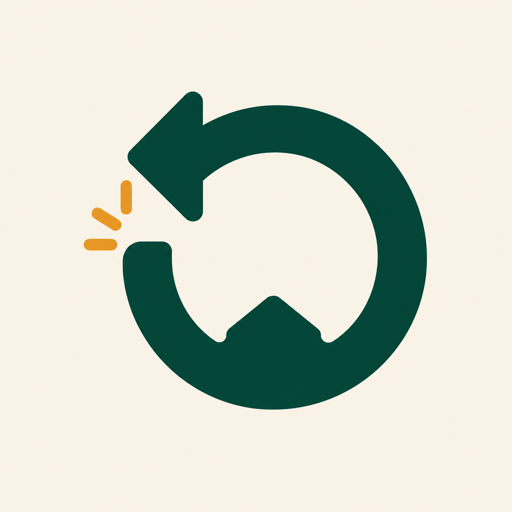

IPHONE DUO
Folded or open.
Backmark fills the whole iPhone Duo display, folded or open, so your Library, Boards, and routes use all the space.

BACKMARKPRIVATE BY DESIGN · FOR IPHONE
Keep links, screenshots, posts, and files together with their preview, source, and searchable text, then turn your Memories into something useful.
WATCH THE INTRO · 0:44
Share a link, screenshot, post, or place from any app. Find it again in seconds, then turn it into a Board you can plan with and share.
NEW IN 1.2.1
Backmark now fits iPhone Duo, shows a picture for every save on a Board, and turns shared directions into places.
Backmark fills the whole iPhone Duo display, folded or open, so your Library, Boards, and routes use all the space.
Each save on a Board shows its picture: your screenshot or photo, a map pin for a place, or the icon of where it came from. Tap one to open it.
Share directions from Google Maps or Apple Maps and Backmark saves the destination as a place. A Board’s route follows its order; drag a stop to move it.